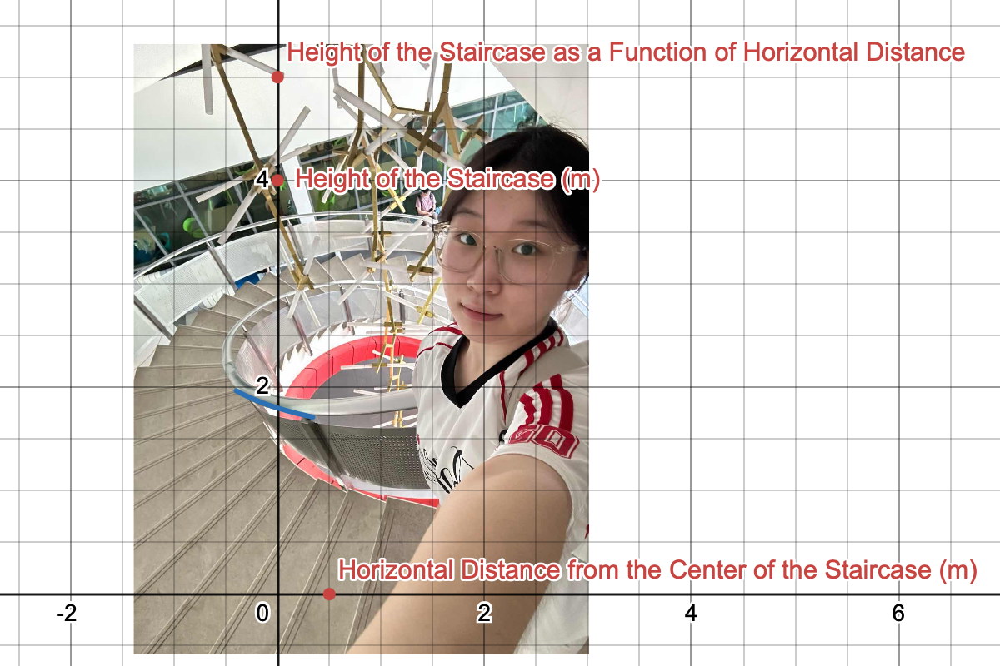
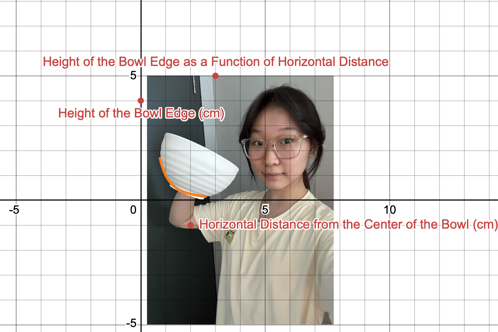
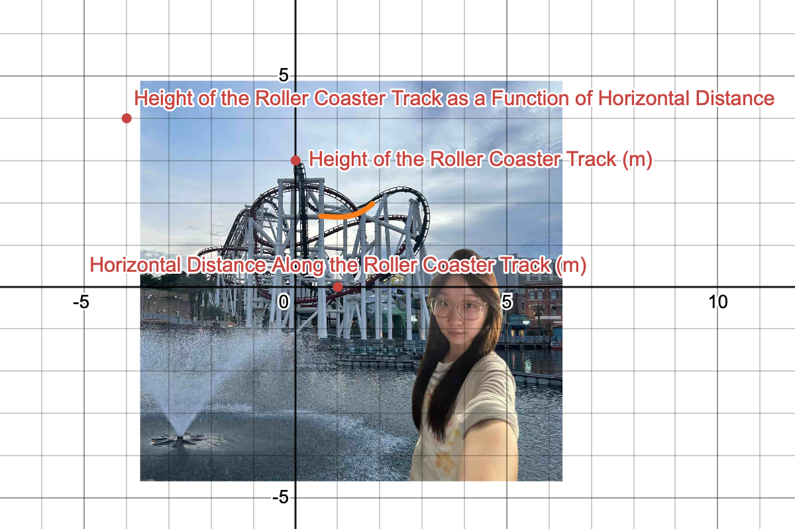
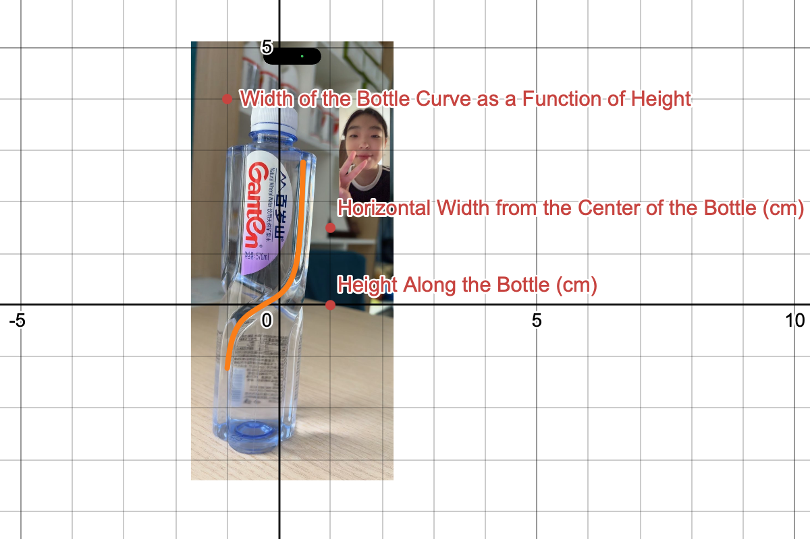
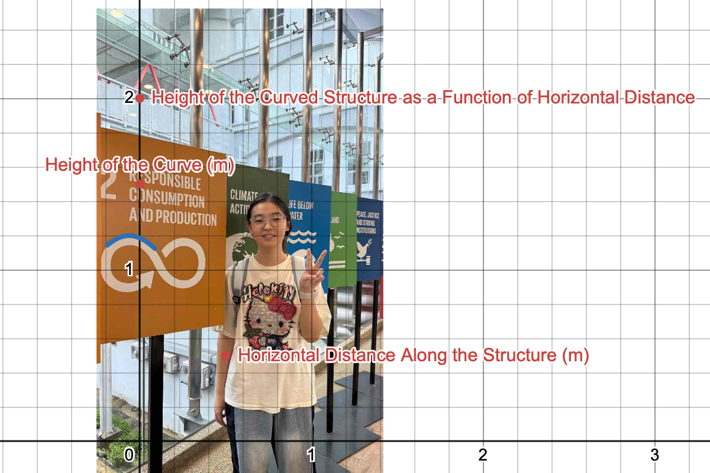
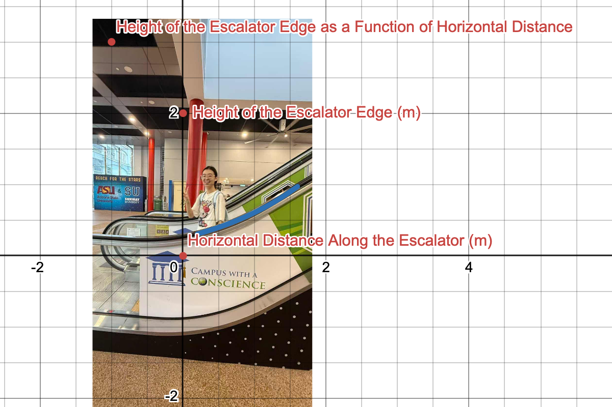
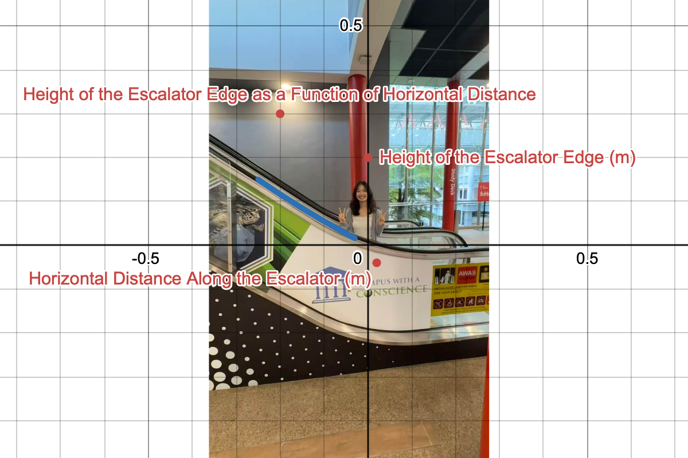
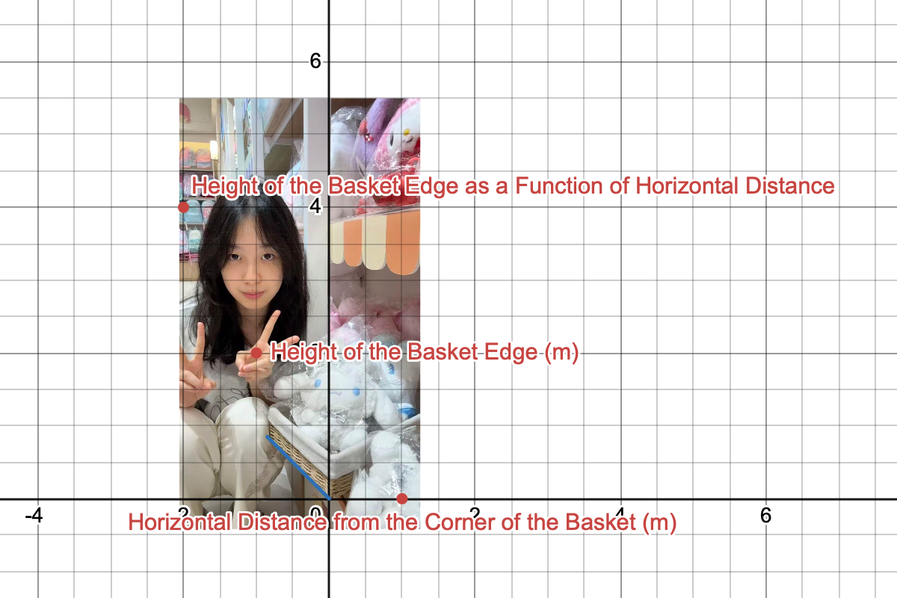
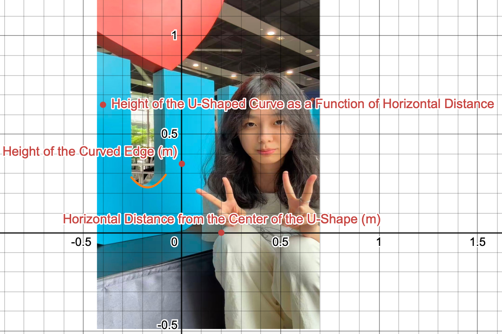

Transformations I chose a photograph of a spiral staircase. To simulate the handrail in the photo, I first noticed its shape resembled an inverse proportional function, so I used this parent function y = 1/x as the starting point. Observing the direction of the curve in the image, I saw it decreases from left to right in the first quadrant, indicating that a translated version of the generating function could be used to match the direction of the figure in the image. Initially, I struggled to determine the correct vertical stretch or compression coefficient because the figure in the image was far from the origin, making it difficult to accurately compare steepness. To solve this problem, I temporarily moved the image, aligning the vertical asymptote to x = 0. This allowed me to focus solely on the shape of the figure without considering the complexity of translation. By comparing the rate of change, I determined that vertical stretching was needed instead of compression, and then continuously adjusted the values through observation until the curve closely matched the image. Once the shape was determined, I moved the figure back to its original position using translation. I first moved the image horizontally to align the vertical asymptote with its position in the image, then performed a vertical translation to make the curve pass through key points. This resulted the function y = 0.8 / (x + 1.6) + 1.3 which closely models the shape in the photograph. Summary of Transformations: Vertical stretch by a factor of 0.8 Horizontal translation of 1.6 units to the left Vertical translation of 1.3 units upward Domain and Range: The domain of my function is D: x ∈ ℝ | -0.4 ≤ x ≤ 0.34. The parent function y = 1/x has a domain of D: x ∈ ℝ | x ≠ 0 and a range of R: y ∈ ℝ | y ≠ 0. After applying transformations, my function has a vertical asymptote at x = -1.6 and a horizontal asymptote at y = 1.3. The range of the function is approximately R: y ∈ ℝ | 1.71 ≤ y ≤ 1.96.

Transformations I chose this picture of the bowl. The bowl is a common everyday item, and its smooth curved shape can be represented by a simple mathematical function. To model the bowl in the picture, I first determined that its shape was very similar to a reciprocal square function, so I used this function y = 1/x^2 as the starting point. After observing the direction of the curve in the image, I saw that it opened upwards and was symmetrical about the y -axis, which was the same as the parent function. However, to match the orientation of the bowl, I decided to perform a vertical reflection on the function, making it open downwards, which better matched the curve shape inside the bowl. At the beginning, it was difficult for me to determine the correct vertical scaling or compression coefficient because the shapes in the image were far from the origin, which made it difficult to accurately compare the steepness. To solve this problem, I temporarily moved the image so that the vertices coincided at (0,0) . This way, I could focus only on the shape of the figure without considering the complexity introduced by translation. By comparing the rate of change, I determined that a vertical compression rather than a stretch was needed, and then I continuously adjusted the values by observing until the curve perfectly matched the image. After determining the shape, I restored the figure to its original position by translating it. I first moved the figure horizontally to align the axis of symmetry with the position in the image, and then performed a vertical translation to ensure the curve passed through the key points. This way, I obtained this function y = 1/x^2 which closely models the shape in the photograph. Domain and Range The domain of my function is D: x ∈ ℝ | 0.77 ≤ x ≤ 2.6 . I limited the domain to the portion of the bowl’s interior curve that was visible in the photograph. In hindsight, I would have taken the picture from a more direct side view to capture the full symmetric profile, allowing me to model the complete curve rather than only the visible section. As a result, my model is only valid for the portion of the bowl captured in the image. The parent function y = 1/x^2 has a domain of D: x ∈ ℝ | x ≠ 0 and a range of R: y ∈ ℝ | y > 0. This means the function is undefined at x = 0 and always produces positive outputs. It also has a vertical asymptote at x = 0 and a horizontal asymptote at y = 0. After applying transformations, my function has a vertical asymptote at x = 1.5 and a maximum value at the vertex. However, since I restricted the domain to a small interval that lies entirely away from the asymptote, this undefined behaviour is not present in my model. Therefore, I do not need to consider the discontinuity when describing the domain and range of this specific situation. Since the function is continuous on the restricted interval, the range can be determined by evaluating the function at the endpoints of the domain. By evaluating at x = 0.77 and x = 2.6, I obtained approximate output values of 0.15 and 1.64. Therefore, the range of the function is approximately R: y ∈ ℝ | 0.15 ≤ y ≤ 1.64.

Transformations I chose this photo of a roller coaster track. The curve in the photo perfectly reflects the characteristics of a polynomial function in the real world. To model the track, I first determined its shape resembled a cubic function with two inflection points, so I used parent function y = x^3 − 2x^2 + x as a starting point. Observing the direction of the curve, I saw it rise, then fall, and then rise again, similar to the basic function, but requiring a vertical flip to match the track's upward trajectory. Initially, I struggled to determine the correct vertical scaling or compression coefficients because the graph was far from the origin, making accurate comparison of steepness difficult. To solve this problem, I temporarily moved the image to align local maxima with the origin. This allowed me to focus solely on the shape of the graph without considering the complexity of translation. By comparing the rates of change, I determined that vertical scaling was needed instead of compression, and then adjusted the values through observation until the curve closely matched the image. Once the shape was determined, I restored the graph to its original position through translation. I first moved the graph horizontally to align the key inflection points with their positions in the image, then performed a vertical translation to make the curve pass through the key points. This resulted in the function y = −0.2(-1.3(x^3 − 2x^2 + x + 5.6)) + 0.2 which closely models the shape in the photograph. Summary of Transformations: y = 0.26(x^3 − 2x^2 + x + 5.6) + 0.2 Vertical stretch by a factor of 1.3 (vertical reflection over the x-axis) → −1.3(x^3 − 2x^2 + x + 5.6) Vertical stretch by a factor of 0.2 → y = 0.26(x^3 − 2x^2 + x + 5.6) Vertical translation of 0.2 units upward → y = 0.26(x^3 − 2x^2 + x + 5.6) + 0.2 Domain and Range The domain of my function is D: x ∈ ℝ | 0.6 ≤ x ≤ 1.82. I limited the domain to the portion of the track that was visible in the photograph. In hindsight, I would have taken the picture so that it included a longer segment of the track, allowing me to model a clearer section of the cubic curve rather than only the visible segment. As a result, my model is only valid for the portion of the track captured in the image. The parent function y = x^3 − 2x^2 + x has a domain of D: x ∈ ℝ and a range of R: y ∈ ℝ. After applying transformations, my function remains a continuous polynomial function with no discontinuities or asymptotes. Since the function is continuous on the restricted interval, the range can be determined by evaluating the function at the endpoints and at the local minimum and maximum within the domain. By evaluating at x = 0.6, x = 1.82, and the turning points inside the interval, I obtained approximate output values of 1.65 and 1.97. Therefore, the range of the function is approximately R: y ∈ ℝ | 1.65 ≤ y ≤ 1.97.

Transformations I chose this photo of the water bottle. The steep inward curve on the side of the bottle matches the characteristic shape of the tangent function. To model the curve in the photo, I first determined that its shape was like the tangent function, so I used parent function y = tan x as the starting point. After observing the direction of the curve in the image, I saw that it was a steep arc, so I used horizontal compression and vertical scaling to match the curve of the water bottle. At first, it was difficult for me to find the correct vertical stretching or compression factor because the curves in the image were far from the origin, making it hard to accurately compare the steepness. To solve this problem, I temporarily moved the image and aligned the vertical asymptotes to a clear coordinate axis. This way, I could focus on the shape of the curve without considering the complexity caused by translation. By comparing the rate of change, I determined that vertical stretching was needed instead of compression, and then I continuously adjusted the values by observing until the curve matched the image perfectly. After determining the shape, I restored the curve to its original position by translating it. I first moved the graph horizontally to align the asymptotes with their positions in the image, and then made a vertical translation to ensure the curve passed through the key points. So, I get this function y = 0.3 tan (1.9(x + 0.3)) Summary of Transformations Vertical stretch by a factor of 0.3 → 0.3 tan x Horizontal compression by a factor of 1.9 → 0.3tan (1.9x) Horizontal translation of 0.3 units to the left → 0.3tan (1.9(x + 0.3)) Domain and Range The domain of my function is D: x ∈ ℝ | − 0.1 ≤ x ≤ 0.47. I limited the domain to the portion of the bottle’s curve that was visible in the photograph. As a result, my model is only valid for the portion of the bottle captured in the image. The parent function y = tan x has a domain of D: x ∈ ℝ | x ≠ π/2 + kπ, k ∈ ℤ and a range of R: y ∈ ℝ. After applying transformations, my function also has vertical asymptotes. However, since I restricted the domain to a small interval that lies entirely away from the asymptote, the function is continuous within my model. Since the function is continuous on the restricted interval, the range can be determined by evaluating the function at the endpoints of the domain. By evaluating at x = −0.1 and x = 0.47, I obtained approximate output values. Therefore, the range of the function is approximately R: y ∈ ℝ | −1.22 ≤ y ≤ 1.77.

Transformations I chose this photo of the circular ring-shaped logo. The repetitive curve patterns on the logo correspond to the periodicity of the sine function. To simulate the curves in the photo, I first realized that its shape resembled the sine function, so I used parent function y = sin x as the starting point. After observing the direction of the curves in the image, I noticed that they repeated at regular intervals and had a gentle wavy part similar to the sine function, but a horizontal compression and vertical scaling were needed to match the ratio of the logo. At the beginning, it was difficult for me to determine the correct vertical stretching or compression factor because the curves in the image were far from the origin, making it hard to accurately compare the steepness. To solve this problem, I temporarily moved the image and aligned the center line to a clear reference line. This way, I could focus on the shape of the curve without considering the complexity caused by translation. By comparing the rate of change, I determined that a vertical compression rather than stretching was needed, and then I continuously adjusted the values by observing until the curve matched the image height perfectly. After determining the shape, I restored the figure to its original position by translating it. I first moved the figure horizontally to align the peak with the corresponding position in the image, and then moved it vertically to make the curve pass through the key points. Finally, I get this function: y =− 0.2sin (6(x − 0.2)) + 1 Summary of Transformations Vertical compression by a factor of 0.2 (with reflection over x-axis) → −0.2sin x Horizontal compression by a factor of 1/6 → -0.2sin (6x) Horizontal translation of 0.2 units to the right → −0.2sin (6(x − 0.2)) Vertical translation of 1 units upward → −0.2sin (6(x − 0.2)) + 1 Domain and Range The domain of my function is D: x ∈ ℝ | − 0.19 ≤ x ≤ 0.088. I limited the domain to the portion of the ring curve that was visible in the photograph. As a result, my model is only valid for the portion of the sign captured in the image. The parent function y = sin x has a domain of D: x ∈ ℝ and a range of R: y ∈ ℝ | −1 ≤ y ≤ 1. After applying transformations, my function remains a continuous sinusoidal function with no discontinuities or asymptotes. Since the function is continuous on the restricted interval, the range can be determined by evaluating at x = -0.19 and x = 0.088 and checking the turning points in between. Therefore, the range of the function is approximately R: y ∈ ℝ | 1.12 ≤ y ≤ 1.20.

Transformations I chose this photo of the elevator handrail. The stable upward-curving slope of the handrail matches the increasing curve shape of the exponential function. To model the handrail in the photo, I first discovered that its shape resembled an exponential function, so I used parent function y = 2^x as the starting point. After observing the direction of the curve in the image, I saw that it was gradually increasing, so I used horizontal compression and vertical scaling to fit the slope of the handrail. At the beginning, it was difficult for me to determine the correct vertical stretching or compression factor because the curves in the image were far from the origin, making it hard to accurately compare the steepness. To solve this problem, I temporarily moved the image and aligned the starting point to a clear reference point. This way, I could focus on the shape of the curve without considering the complexity caused by translation. By comparing the rate of change, I determined that a vertical compression rather than stretching was needed, and then I continuously adjusted the values by observing until the curve matched the image height perfectly. After determining the shape, I restored the curve to its original position by translating it. I first moved the graphic horizontally to align the starting point of the armrest with the graphic, and then made a vertical translation to ensure the curve passes through the key points. So, I get this function y = 2(2^(x−1.5)) − 0.1 which closely models the shape in the photograph. Summary of Transformations Vertical stretch by a factor of 2 → 2(2^x) Horizontal translation of 1.5 units right → 2(2^(x−1.5)) Vertical translation of 0.1 units down → 2(2^(x-1.5)) − 0.1 Domain and Range The domain of my function is D: x ∈ ℝ | 0.2 ≤ x ≤ 1.6 . I limited the domain to the portion of the handrail that was visible in the photograph. As a result, my model is only valid for the portion of the handrail captured in the image. The parent function y = 2^x has a domain of D: x ∈ ℝ and a range of R: y ∈ ℝ | y > 0. After applying transformations, my function has a horizontal asymptote y = −0.1. However, since I restricted the domain to a small interval above the asymptote, the function is continuous over the restricted domain. Since the function is continuous on the restricted interval, the range can be determined by evaluating at x = 0.2 and x = 1.6. Therefore, the range of the function is approximately R: y ∈ ℝ | 0.31 ≤ y ≤ 0.97.

Transformations I chose this photo of an elevator handrail. The handrail's gentle descent curve closely resembles the shape of a logarithmic function. To model the handrail in the photo, I first determined its starting point. Observing the direction of the curve in the image, I noticed its descent was relatively slow, so I applied a horizontal reflection to the function and scaled it to match the handrail's shape. Initially, I struggled to determine the correct vertical scaling or compression coefficient because the graphic in the image was far from the origin, making accurate comparison of steepness difficult. To solve this problem, I temporarily moved the image, aligning the vertical asymptote to a clear reference line. This allowed me to focus solely on the shape of the graphic without dealing with the complexities of translation. By comparing the rate of change, I determined that vertical compression, rather than scaling, was needed, and then adjusted the values through observation until the curve perfectly matched the image. Once the shape was determined, I restored the graphic to its original position through translation. I first moved the graphic horizontally to avoid the asymptote, then performed a vertical translation to make the curve pass through key points. This resulted in the function y = −1.2log (x + 1) which closely models the shape in the photograph. Summary of Transformations: Vertical stretch by a factor of 1.2 (reflection over the x-axis) → −1.2log x Horizontal translation of 1 units to the left → −1.2log (x + 1) Domain and Range: The domain of my function is D: x ∈ ℝ | −0.25 ≤ x ≤ −0.03. I limited the domain to the portion of the handrail that was visible in the photograph. As a result, my model is only valid for the portion of the handrail captured in the image. The parent function y = log x has a domain of D: x ∈ ℝ | x > 0 and a range of R: y ∈ ℝ. After applying transformations, my function has a vertical asymptote at x = −1. However, since I restricted the domain to values between -0.25 and -0.03, the function is continuous and has no discontinuities in my model. Since the function is continuous on the restricted interval, the range can be determined by evaluating x = -0.25 and x = -0.03. Therefore, the range of the function is approximately R: y ∈ ℝ | 0.02 ≤ y ≤ 0.15.

Transformations I chose this photo of the rectangular basket. The sharp right-angle of the basket perfectly matches the V-shaped curve of the absolute value function. To simulate this angle in the photo, I first noticed that its shape resembles the absolute value function, so I used the parent function y = |x| as the starting point. After observing the direction of the curve in the image, I saw that the vertex was at the center and aligned well with the angle of the basket, so no scaling or translation was needed. From this, we obtain the function: y = |x| which closely models the shape in the photograph. Domain and Range The domain of my function is D: x ∈ ℝ | − 0.85 ≤ x ≤ 0. I limited the domain to the portion of the basket corner that was visible in the photograph. As a result, my model is only valid for the portion of the basket captured in the image. The parent function y = |x| has a domain of D: x ∈ ℝ and a range of R: y ∈ ℝ | y ≥ 0. This means the function is defined for all real numbers and always non-negative with no asymptotes. Since my function y = |x| has no transformations, it remains continuous with no discontinuities or asymptotes. Therefore, the entire restricted domain is valid for this model. Since the function is continuous on the restricted interval, the range can be determined by evaluating x = -0.85 and x = 0. Therefore, the range of the function is approximately R: y ∈ ℝ | 0 ≤ y ≤ 0.82.

Transformations I chose this photo of the letter U. The smooth upward-curved curve of the letter perfectly matches the shape of a quadratic function. To model the letter in the photo, I first discovered that its shape resembled a parabola, so I used the parent function y = x² as the starting point. After observing the direction of the curve in the image, I noticed that the parabola was wider and needed to be vertically compressed and shifted to match the shape of the letter U. At the beginning, it was difficult for me to find the appropriate vertical stretching or compression factor because the curves in the image were far from the origin, making it hard to accurately compare the steepness. To solve this problem, I temporarily moved the image and aligned the vertices to the origin. This way, I could focus on the shape of the curve without considering the complexity caused by translation. By comparing the width, I determined that vertical compression was needed, and then I continuously adjusted the compression value until the curve matched the height of the image perfectly. After determining the shape, I moved the curve back to its original position by translation. I moved the graph horizontally and vertically to align the vertices with the bottom of the letter "U". This resulted in the function y = 7.6(x + 0.174)² + 0.23 which closely models the shape in the photograph. Summary of Transformations Vertical stretch by a factor of 7.6 → 7.6x² Horizontal translation of 0.174 units to the left → 7.6(x + 0.174)² Vertical translation of 0.23 units upward → 7.6(x + 0.174)² + 0.23 Domain and Range The domain of my function is D: x ∈ ℝ | − 0.256 ≤ x ≤ − 0.082. I limited the domain to the portion of the letter U that was visible in the photograph. As a result, my model is only valid for the portion of the letter captured in the image. The parent function y = x² has a domain of D: x ∈ ℝ and a range of R: y ∈ ℝ | y ≥ 0. This means the function is defined for all real numbers and always non-negative with no asymptotes. After applying transformations, my function remains a continuous parabola with no discontinuities or asymptotes. Therefore, the entire restricted domain is valid for this model. Since the function is continuous on the restricted interval, the range can be determined by evaluating x = -0.256, x = -0.082, and the vertex. Therefore, the range of the function is approximately R: y ∈ ℝ | 0.23 ≤ y ≤ 0.29.

![Inverse proportion square function Transformations I chose this picture of the bowl. The bowl is a common everyday item, and its smooth curved shape can be represented by a simple mathematical function. To model the bowl in the picture, I first determined that its shape was very similar to a reciprocal square function, so I used this function y = 1/x^2 as the starting point. After observing the direction of the curve in the image, I saw that it opened upwards and was symmetrical about the y -axis, which was the same as the parent function. However, to match the orientation of the bowl, I decided to perform a vertical reflection on the function, making it open downwards, which better matched the curve shape inside the bowl. At the beginning, it was difficult for me to determine the correct vertical scaling or compression coefficient because the shapes in the image were far from the origin, which made it difficult to accurately compare the steepness. To solve this problem, I temporarily moved the image so that the vertices coincided at (0,0) . This way, I could focus only on the shape of the figure without considering the complexity introduced by translation. By comparing the rate of change, I determined that a vertical compression rather than a stretch was needed, and then I continuously adjusted the values by observing until the curve perfectly matched the image. After determining the shape, I restored the figure to its original position by translating it. I first moved the figure horizontally to align the axis of symmetry with the position in the image, and then performed a vertical translation to ensure the curve passed through the key points. This way, I obtained this function y = 1/x^2 which closely models the shape in the photograph. Domain and Range The domain of my function is D: x ∈ ℝ | 0.77 ≤ x ≤ 2.6 . I limited the domain to the portion of the bowl’s interior curve that was visible in the photograph. In hindsight, I would have taken the picture from a more direct side view to capture the full symmetric profile, allowing me to model the complete curve rather than only the visible section. As a result, my model is only valid for the portion of the bowl captured in the image. The parent function y = 1/x^2 has a domain of D: x ∈ ℝ | x ≠ 0 and a range of R: y ∈ ℝ | y > 0. This means the function is undefined at x = 0 and always produces positive outputs. It also has a vertical asymptote at x = 0 and a horizontal asymptote at y = 0. After applying transformations, my function has a vertical asymptote at x = 1.5 and a maximum value at the vertex. However, since I restricted the domain to a small interval that lies entirely away from the asymptote, this undefined behaviour is not present in my model. Therefore, I do not need to consider the discontinuity when describing the domain and range of this specific situation. Since the function is continuous on the restricted interval, the range can be determined by evaluating the function at the endpoints of the domain. By evaluating at x = 0.77 and x = 2.6, I obtained approximate output values of 0.15 and 1.64. Therefore, the range of the function is approximately R: y ∈ ℝ | 0.15 ≤ y ≤ 1.64. ](bowl.png){kind=link}
![cubic polynomial Transformations I chose this photo of a roller coaster track. The curve in the photo perfectly reflects the characteristics of a polynomial function in the real world. To model the track, I first determined its shape resembled a cubic function with two inflection points, so I used parent function y = x^3 − 2x^2 + x as a starting point. Observing the direction of the curve, I saw it rise, then fall, and then rise again, similar to the basic function, but requiring a vertical flip to match the track's upward trajectory. Initially, I struggled to determine the correct vertical scaling or compression coefficients because the graph was far from the origin, making accurate comparison of steepness difficult. To solve this problem, I temporarily moved the image to align local maxima with the origin. This allowed me to focus solely on the shape of the graph without considering the complexity of translation. By comparing the rates of change, I determined that vertical scaling was needed instead of compression, and then adjusted the values through observation until the curve closely matched the image. Once the shape was determined, I restored the graph to its original position through translation. I first moved the graph horizontally to align the key inflection points with their positions in the image, then performed a vertical translation to make the curve pass through the key points. This resulted in the function y = −0.2(-1.3(x^3 − 2x^2 + x + 5.6)) + 0.2 which closely models the shape in the photograph. Summary of Transformations: y = 0.26(x^3 − 2x^2 + x + 5.6) + 0.2 Vertical stretch by a factor of 1.3 (vertical reflection over the x-axis) → −1.3(x^3 − 2x^2 + x + 5.6) Vertical stretch by a factor of 0.2 → y = 0.26(x^3 − 2x^2 + x + 5.6) Vertical translation of 0.2 units upward → y = 0.26(x^3 − 2x^2 + x + 5.6) + 0.2 Domain and Range The domain of my function is D: x ∈ ℝ | 0.6 ≤ x ≤ 1.82. I limited the domain to the portion of the track that was visible in the photograph. In hindsight, I would have taken the picture so that it included a longer segment of the track, allowing me to model a clearer section of the cubic curve rather than only the visible segment. As a result, my model is only valid for the portion of the track captured in the image. The parent function y = x^3 − 2x^2 + x has a domain of D: x ∈ ℝ and a range of R: y ∈ ℝ. After applying transformations, my function remains a continuous polynomial function with no discontinuities or asymptotes. Since the function is continuous on the restricted interval, the range can be determined by evaluating the function at the endpoints and at the local minimum and maximum within the domain. By evaluating at x = 0.6, x = 1.82, and the turning points inside the interval, I obtained approximate output values of 1.65 and 1.97. Therefore, the range of the function is approximately R: y ∈ ℝ | 1.65 ≤ y ≤ 1.97. ](coaster.png){kind=link}
![y = tan x Transformations I chose this photo of the water bottle. The steep inward curve on the side of the bottle matches the characteristic shape of the tangent function. To model the curve in the photo, I first determined that its shape was like the tangent function, so I used parent function y = tan x as the starting point. After observing the direction of the curve in the image, I saw that it was a steep arc, so I used horizontal compression and vertical scaling to match the curve of the water bottle. At first, it was difficult for me to find the correct vertical stretching or compression factor because the curves in the image were far from the origin, making it hard to accurately compare the steepness. To solve this problem, I temporarily moved the image and aligned the vertical asymptotes to a clear coordinate axis. This way, I could focus on the shape of the curve without considering the complexity caused by translation. By comparing the rate of change, I determined that vertical stretching was needed instead of compression, and then I continuously adjusted the values by observing until the curve matched the image perfectly. After determining the shape, I restored the curve to its original position by translating it. I first moved the graph horizontally to align the asymptotes with their positions in the image, and then made a vertical translation to ensure the curve passed through the key points. So, I get this function y = 0.3 tan (1.9(x + 0.3)) Summary of Transformations Vertical stretch by a factor of 0.3 → 0.3 tan x Horizontal compression by a factor of 1.9 → 0.3tan (1.9x) Horizontal translation of 0.3 units to the left → 0.3tan (1.9(x + 0.3)) Domain and Range The domain of my function is D: x ∈ ℝ | − 0.1 ≤ x ≤ 0.47. I limited the domain to the portion of the bottle’s curve that was visible in the photograph. As a result, my model is only valid for the portion of the bottle captured in the image. The parent function y = tan x has a domain of D: x ∈ ℝ | x ≠ π/2 + kπ, k ∈ ℤ and a range of R: y ∈ ℝ. After applying transformations, my function also has vertical asymptotes. However, since I restricted the domain to a small interval that lies entirely away from the asymptote, the function is continuous within my model. Since the function is continuous on the restricted interval, the range can be determined by evaluating the function at the endpoints of the domain. By evaluating at x = −0.1 and x = 0.47, I obtained approximate output values. Therefore, the range of the function is approximately R: y ∈ ℝ | −1.22 ≤ y ≤ 1.77. ](bottle.png){kind=link}
![y = sin x Transformations I chose this photo of the circular ring-shaped logo. The repetitive curve patterns on the logo correspond to the periodicity of the sine function. To simulate the curves in the photo, I first realized that its shape resembled the sine function, so I used parent function y = sin x as the starting point. After observing the direction of the curves in the image, I noticed that they repeated at regular intervals and had a gentle wavy part similar to the sine function, but a horizontal compression and vertical scaling were needed to match the ratio of the logo. At the beginning, it was difficult for me to determine the correct vertical stretching or compression factor because the curves in the image were far from the origin, making it hard to accurately compare the steepness. To solve this problem, I temporarily moved the image and aligned the center line to a clear reference line. This way, I could focus on the shape of the curve without considering the complexity caused by translation. By comparing the rate of change, I determined that a vertical compression rather than stretching was needed, and then I continuously adjusted the values by observing until the curve matched the image height perfectly. After determining the shape, I restored the figure to its original position by translating it. I first moved the figure horizontally to align the peak with the corresponding position in the image, and then moved it vertically to make the curve pass through the key points. Finally, I get this function: y =− 0.2sin (6(x − 0.2)) + 1 Summary of Transformations Vertical compression by a factor of 0.2 (with reflection over x-axis) → −0.2sin x Horizontal compression by a factor of 1/6 → -0.2sin (6x) Horizontal translation of 0.2 units to the right → −0.2sin (6(x − 0.2)) Vertical translation of 1 units upward → −0.2sin (6(x − 0.2)) + 1 Domain and Range The domain of my function is D: x ∈ ℝ | − 0.19 ≤ x ≤ 0.088. I limited the domain to the portion of the ring curve that was visible in the photograph. As a result, my model is only valid for the portion of the sign captured in the image. The parent function y = sin x has a domain of D: x ∈ ℝ and a range of R: y ∈ ℝ | −1 ≤ y ≤ 1. After applying transformations, my function remains a continuous sinusoidal function with no discontinuities or asymptotes. Since the function is continuous on the restricted interval, the range can be determined by evaluating at x = -0.19 and x = 0.088 and checking the turning points in between. Therefore, the range of the function is approximately R: y ∈ ℝ | 1.12 ≤ y ≤ 1.20. ](ustructure.png){kind=link}
![y = 2^x Transformations I chose this photo of the elevator handrail. The stable upward-curving slope of the handrail matches the increasing curve shape of the exponential function. To model the handrail in the photo, I first discovered that its shape resembled an exponential function, so I used parent function y = 2^x as the starting point. After observing the direction of the curve in the image, I saw that it was gradually increasing, so I used horizontal compression and vertical scaling to fit the slope of the handrail. At the beginning, it was difficult for me to determine the correct vertical stretching or compression factor because the curves in the image were far from the origin, making it hard to accurately compare the steepness. To solve this problem, I temporarily moved the image and aligned the starting point to a clear reference point. This way, I could focus on the shape of the curve without considering the complexity caused by translation. By comparing the rate of change, I determined that a vertical compression rather than stretching was needed, and then I continuously adjusted the values by observing until the curve matched the image height perfectly. After determining the shape, I restored the curve to its original position by translating it. I first moved the graphic horizontally to align the starting point of the armrest with the graphic, and then made a vertical translation to ensure the curve passes through the key points. So, I get this function y = 2(2^(x−1.5)) − 0.1 which closely models the shape in the photograph. Summary of Transformations Vertical stretch by a factor of 2 → 2(2^x) Horizontal translation of 1.5 units right → 2(2^(x−1.5)) Vertical translation of 0.1 units down → 2(2^(x-1.5)) − 0.1 Domain and Range The domain of my function is D: x ∈ ℝ | 0.2 ≤ x ≤ 1.6 . I limited the domain to the portion of the handrail that was visible in the photograph. As a result, my model is only valid for the portion of the handrail captured in the image. The parent function y = 2^x has a domain of D: x ∈ ℝ and a range of R: y ∈ ℝ | y > 0. After applying transformations, my function has a horizontal asymptote y = −0.1. However, since I restricted the domain to a small interval above the asymptote, the function is continuous over the restricted domain. Since the function is continuous on the restricted interval, the range can be determined by evaluating at x = 0.2 and x = 1.6. Therefore, the range of the function is approximately R: y ∈ ℝ | 0.31 ≤ y ≤ 0.97. ](escalator.png){kind=link}
![y = log x Transformations I chose this photo of an elevator handrail. The handrail's gentle descent curve closely resembles the shape of a logarithmic function. To model the handrail in the photo, I first determined its starting point. Observing the direction of the curve in the image, I noticed its descent was relatively slow, so I applied a horizontal reflection to the function and scaled it to match the handrail's shape. Initially, I struggled to determine the correct vertical scaling or compression coefficient because the graphic in the image was far from the origin, making accurate comparison of steepness difficult. To solve this problem, I temporarily moved the image, aligning the vertical asymptote to a clear reference line. This allowed me to focus solely on the shape of the graphic without dealing with the complexities of translation. By comparing the rate of change, I determined that vertical compression, rather than scaling, was needed, and then adjusted the values through observation until the curve perfectly matched the image. Once the shape was determined, I restored the graphic to its original position through translation. I first moved the graphic horizontally to avoid the asymptote, then performed a vertical translation to make the curve pass through key points. This resulted in the function y = −1.2log (x + 1) which closely models the shape in the photograph. Summary of Transformations: Vertical stretch by a factor of 1.2 (reflection over the x-axis) → −1.2log x Horizontal translation of 1 units to the left → −1.2log (x + 1) Domain and Range: The domain of my function is D: x ∈ ℝ | −0.25 ≤ x ≤ −0.03. I limited the domain to the portion of the handrail that was visible in the photograph. As a result, my model is only valid for the portion of the handrail captured in the image. The parent function y = log x has a domain of D: x ∈ ℝ | x > 0 and a range of R: y ∈ ℝ. After applying transformations, my function has a vertical asymptote at x = −1. However, since I restricted the domain to values between -0.25 and -0.03, the function is continuous and has no discontinuities in my model. Since the function is continuous on the restricted interval, the range can be determined by evaluating x = -0.25 and x = -0.03. Therefore, the range of the function is approximately R: y ∈ ℝ | 0.02 ≤ y ≤ 0.15. ](image1.png){kind=link}
![y = |x| Transformations I chose this photo of the rectangular basket. The sharp right-angle of the basket perfectly matches the V-shaped curve of the absolute value function. To simulate this angle in the photo, I first noticed that its shape resembles the absolute value function, so I used the parent function y = |x| as the starting point. After observing the direction of the curve in the image, I saw that the vertex was at the center and aligned well with the angle of the basket, so no scaling or translation was needed. From this, we obtain the function: y = |x| which closely models the shape in the photograph. Domain and Range The domain of my function is D: x ∈ ℝ | − 0.85 ≤ x ≤ 0. I limited the domain to the portion of the basket corner that was visible in the photograph. As a result, my model is only valid for the portion of the basket captured in the image. The parent function y = |x| has a domain of D: x ∈ ℝ and a range of R: y ∈ ℝ | y ≥ 0. This means the function is defined for all real numbers and always non-negative with no asymptotes. Since my function y = |x| has no transformations, it remains continuous with no discontinuities or asymptotes. Therefore, the entire restricted domain is valid for this model. Since the function is continuous on the restricted interval, the range can be determined by evaluating x = -0.85 and x = 0. Therefore, the range of the function is approximately R: y ∈ ℝ | 0 ≤ y ≤ 0.82. ](image2.png){kind=link}
![y = x² Transformations I chose this photo of the letter U. The smooth upward-curved curve of the letter perfectly matches the shape of a quadratic function. To model the letter in the photo, I first discovered that its shape resembled a parabola, so I used the parent function y = x² as the starting point. After observing the direction of the curve in the image, I noticed that the parabola was wider and needed to be vertically compressed and shifted to match the shape of the letter U. At the beginning, it was difficult for me to find the appropriate vertical stretching or compression factor because the curves in the image were far from the origin, making it hard to accurately compare the steepness. To solve this problem, I temporarily moved the image and aligned the vertices to the origin. This way, I could focus on the shape of the curve without considering the complexity caused by translation. By comparing the width, I determined that vertical compression was needed, and then I continuously adjusted the compression value until the curve matched the height of the image perfectly. After determining the shape, I moved the curve back to its original position by translation. I moved the graph horizontally and vertically to align the vertices with the bottom of the letter "U". This resulted in the function y = 7.6(x + 0.174)² + 0.23 which closely models the shape in the photograph. Summary of Transformations Vertical stretch by a factor of 7.6 → 7.6x² Horizontal translation of 0.174 units to the left → 7.6(x + 0.174)² Vertical translation of 0.23 units upward → 7.6(x + 0.174)² + 0.23 Domain and Range The domain of my function is D: x ∈ ℝ | − 0.256 ≤ x ≤ − 0.082. I limited the domain to the portion of the letter U that was visible in the photograph. As a result, my model is only valid for the portion of the letter captured in the image. The parent function y = x² has a domain of D: x ∈ ℝ and a range of R: y ∈ ℝ | y ≥ 0. This means the function is defined for all real numbers and always non-negative with no asymptotes. After applying transformations, my function remains a continuous parabola with no discontinuities or asymptotes. Therefore, the entire restricted domain is valid for this model. Since the function is continuous on the restricted interval, the range can be determined by evaluating x = -0.256, x = -0.082, and the vertex. Therefore, the range of the function is approximately R: y ∈ ℝ | 0.23 ≤ y ≤ 0.29. ](image3.png){kind=link}